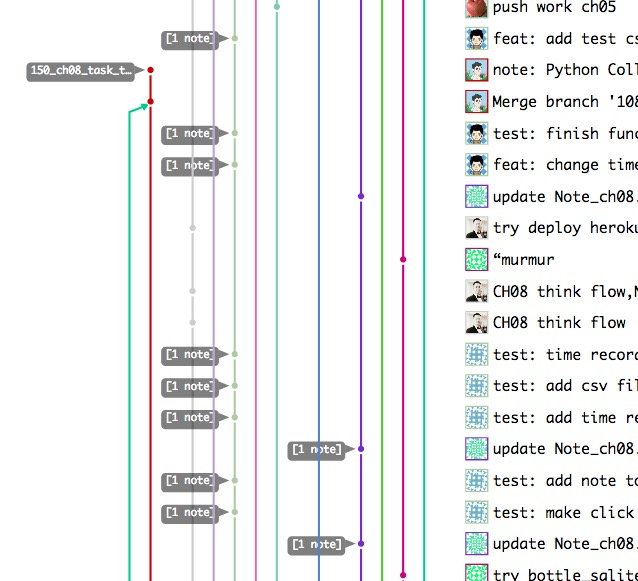

py.101.camp
ch08
190224 2042
CAMP

比来时强
WoW
不得不赞叹…
HbPyNSScope
@Vwan
言出必行
预约
闪电分享
#133
@XiaoYanWork
..前几章没有很好结局的问题
#147
@OMlalala
手绘图对编程的支撑作用+ pandas 读写体验
#151
@doituself
heroku 体验
@adi0229
@yishu
heroku 无法登录引发的..
从 bottle -> Django 的体验?
AKA
All Know All
玻璃花园
C-C 式串门儿

所以

rhythm
韵律
节拍
IDD
Issue Drive Develop
习惯
logging
一切…

所以

learnning
知行
合一
R vs W
抄也得有抄的资历…
@adi0229 不敢多看…
隐喻
理论和经验
101.camp
什么是蠎营?
蠎周刊
嗯哼自己..
新业书
~ 转职手册共创
- @chenmingio
所以
@OMlalala

(￣▽￣)
I/O

是也乎
- 190224 DAMA pub.
- 190223 DAMA draft ++story
- 190222 DAMA draft +WoW
- 190220 DAMA init.
KM

GFM
提问的智慧
作业?
提问
+5 为什么?
5W1H
框架…
zoom.us
例蠎交流
- 周日 2042
404-101-4441- @huangyu9887 建议统一ID
VCS
Kaopulity
- Keep
- all
- of
- processes
- usability
能技
能使目标对象对指定命题产生科学兴趣的技术
Activity
- commit
- commit-comments
- issue
- issue-comments
- slack